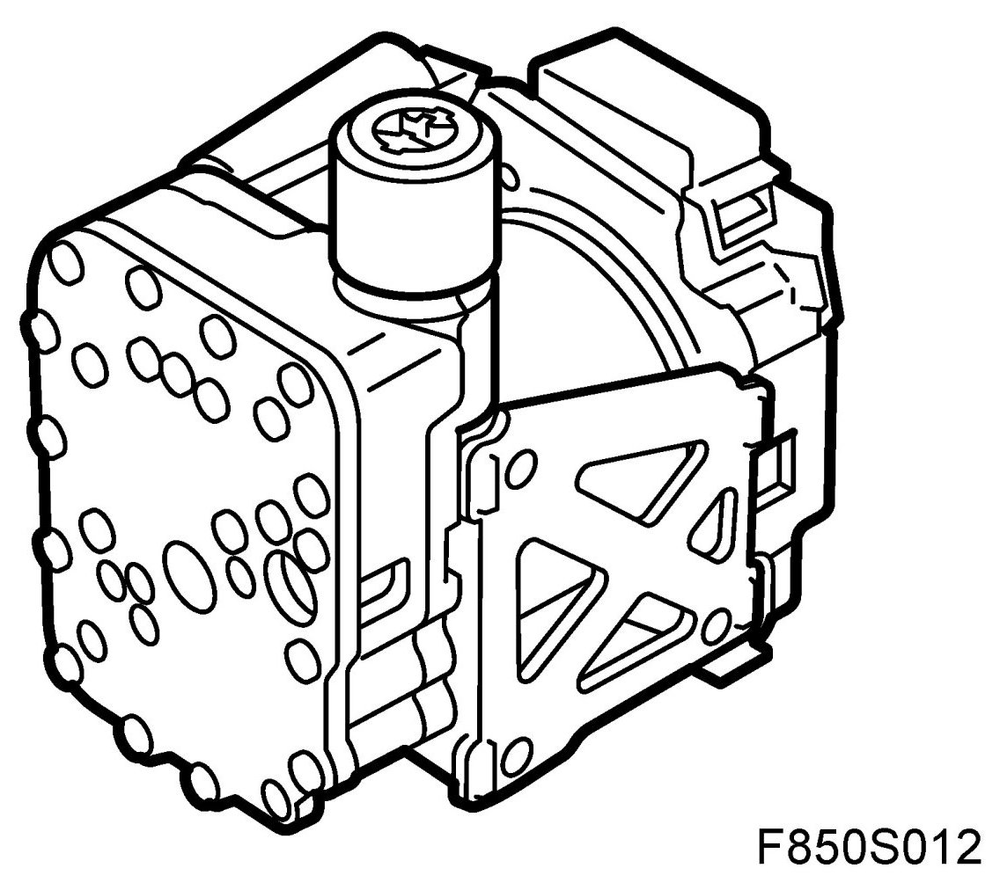
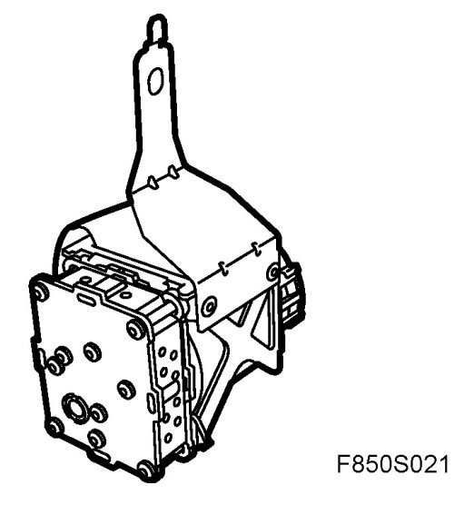
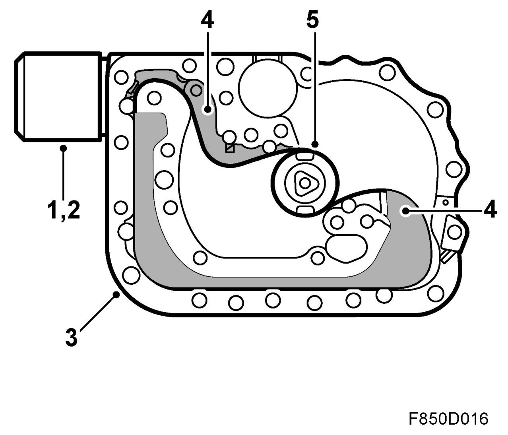
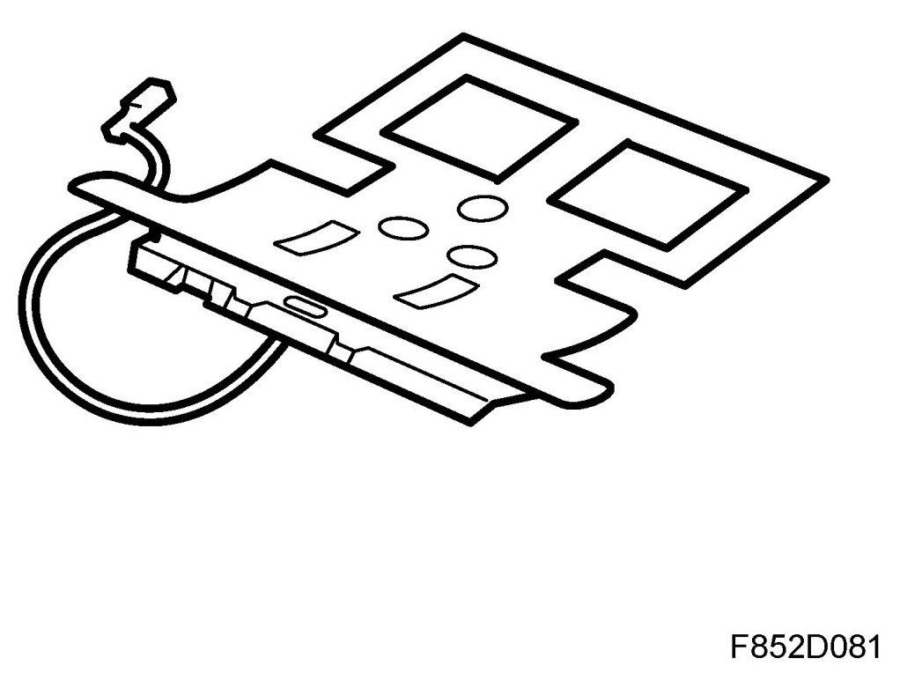
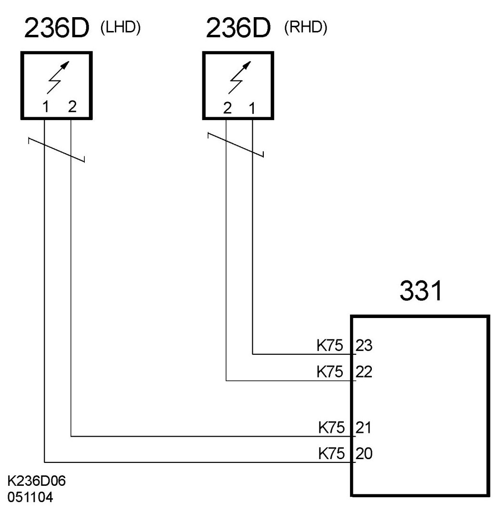
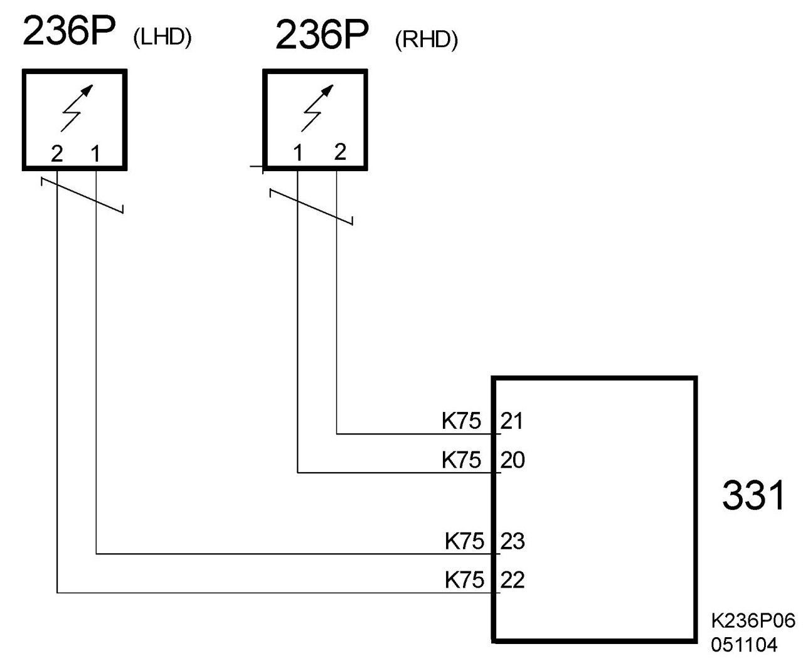
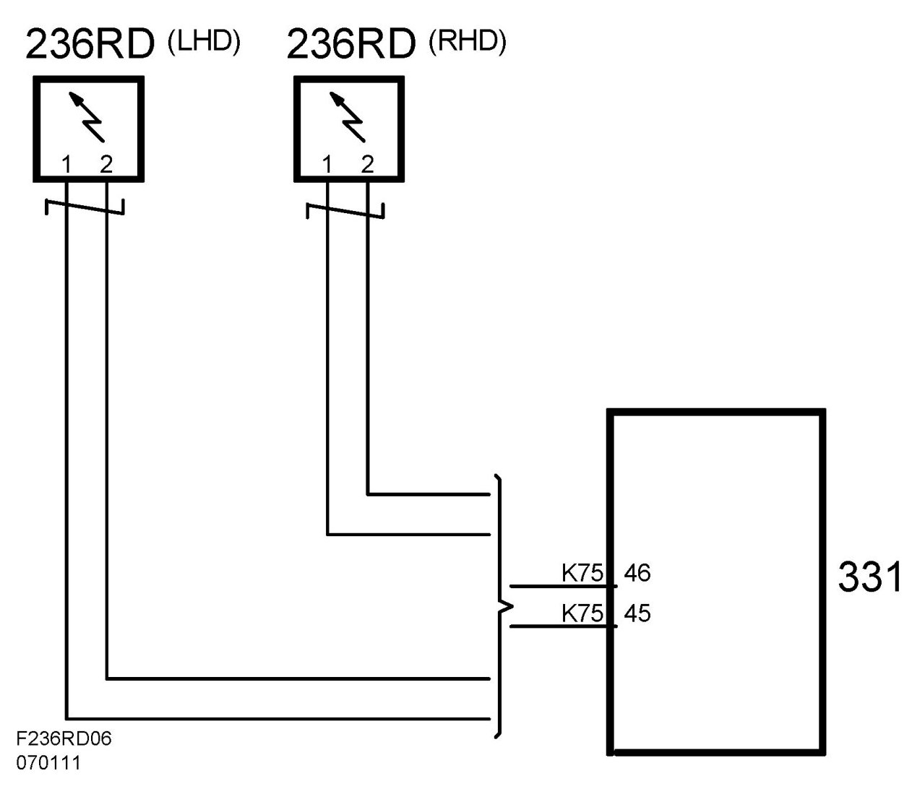
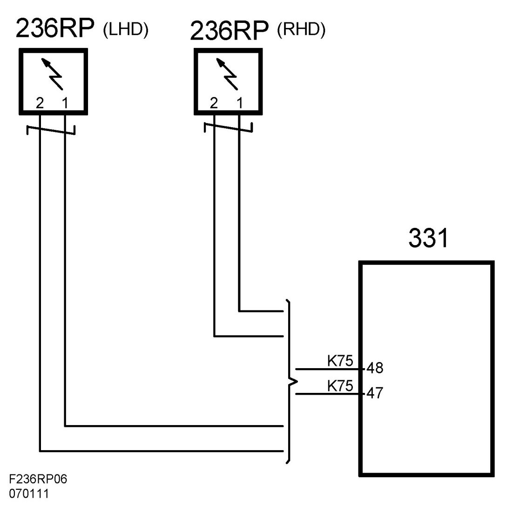

Belt Pretensioner (236C, 236P) (236RD, 236RP, CV)
Belt Pretensioner (236C, 236P) (236RD, 236RP, CV)
Location
Belt tensioner, driver (236D)
Belt tensioner, passenger (236P)
Belt pretensioner, rear seat, driver's side (236RD) (CV).
Belt pretensioner, rear seat, passenger side (236RP) (CV).
CV:

4D, 5D:

Main task
The belt tensioner pulls the belt taut during the event of a collision, reducing forward movement of the driver or passenger. Additionally, force limiters release the belt according to a controlled sequence.
Type
The compact belt tensioner is a part of the inertia reel consisting of an explosive charge, feeler gauge, filter and a torsion unit.
1. Detonator

2. Charge
3. Belt tensioner housing
4. Chamber
5. Steel band
Connect
The driver's side belt pretensioner is connected to pin 20 (B+) and pin 21 (ground) on the airbag control module.


The passenger side belt pretensioner is connected to pin 23 (B+) and pin 22 (ground) on the airbag control module.

The belt tensioner in the rear seat behind the driver (236RD) is connected to pin 45 (B+) and pin 46 ground.

The belt tensioner in the rear seat behind the passenger (236RP) is connected to pin 48 (B+) and pin 47 ground.
